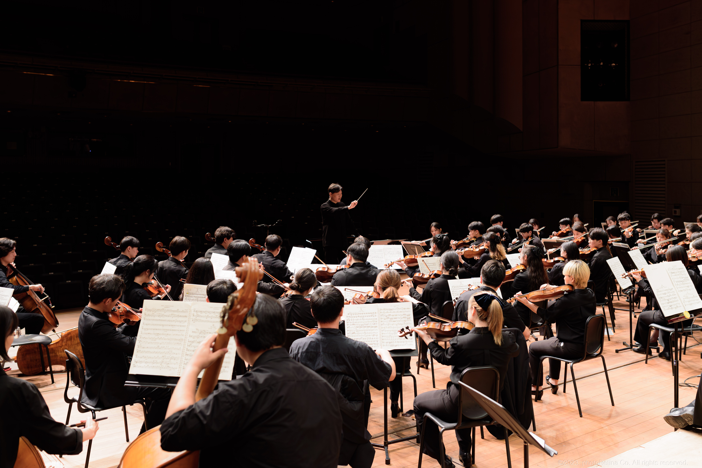

음악으로 하나 되는 대학생, AOU
대학아마추어오케스트라연합(AOU, Amateur Orchestra Union of university)은 2014년 6월 대학 아마추어 오케스트라 간 정보 공유를 목적으로 설립되어, 현재 전국 70여개 대학 오케스트라가 소속되어 활발히 교류하고 있습니다. 각종 소셜미디어를 활용해 오케스트라 운영에 관한 정보 공유의 장을 마련하고 있으며, 소속 대학의 오케스트라 회장단을 중심으로 한 대표자 회의를 주최합니다. 이를 위해 공식 카페, 인스타그램, 대표자 전용 카카오톡 채팅방을 운영 중에 있습니다.
또한, 2015년 1월부터 매년 약 2회의 프로젝트 연주회를 주최하고 있습니다. 단일 대학 오케스트라 단위에서 도전하기 힘든 프로그램을 기획하며 아마추어 대학생의 공연 레파토리 확장을 꾀하고, 다양한 대학 출신 단원들의 활발한 교류를 도모합니다. 각 공연마다 아마추어 대학생 중 최고 수준에 든다는 평을 받고 있으며, 역대 연주 영상은 유튜브를 통해 확인하실 수 있습니다.
대외적으로는 전문음악기관(금호아시아나, 서울시향, KBS 교향악단 등)과의 티켓제휴, 합동공연등을 실시하며 클래식의 저변 확대 및 대중화를 위해 노력하고 있습니다.

대학아마추어오케스트라연합(AOU, Amateur Orchestra Union of university)은 2014년 6월 대학 아마추어 오케스트라 간 정보 공유를 목적으로 설립되어, 현재 전국 70여개 대학 오케스트라가 소속되어 활발히 교류하고 있습니다. 각종 소셜미디어를 활용해 오케스트라 운영에 관한 정보 공유의 장을 마련하고 있으며, 소속 대학의 오케스트라 회장단을 중심으로 한 대표자 회의를 주최합니다. 이를 위해 공식 카페, 인스타그램, 대표자 전용 카카오톡 채팅방을 운영 중에 있습니다.
또한, 2015년 1월부터 매년 약 2회의 프로젝트 연주회를 주최하고 있습니다. 단일 대학 오케스트라 단위에서 도전하기 힘든 프로그램을 기획하며 아마추어 대학생의 공연 레파토리 확장을 꾀하고, 다양한 대학 출신 단원들의 활발한 교류를 도모합니다. 각 공연마다 아마추어 대학생 중 최고 수준에 든다는 평을 받고 있으며, 역대 연주 영상은 유튜브를 통해 확인하실 수 있습니다.
대외적으로는 전문음악기관(금호아시아나, 서울시향, KBS 교향악단 등)과의 티켓제휴, 합동공연등을 실시하며 클래식의 저변 확대 및 대중화를 위해 노력하고 있습니다.

AOU의 발자취
다음은 AOU 소속 대학 목록입니다.
History
역대 연주 정보
※ 포스터를 눌러 상세정보 확인하기
- 2015-2019
- 2020-2024
- 2025-2029
Contact
AOU 관련 링크